1 DECEMBER 2026 | IN PERSON | HANDS-ON LAB GUIDE
OPS Microsoft Developer Day
Hands-on lab guide
Tuesday 1 December 2026 | 08:30-16:00 ET | In person | Guide version 3.2
Today you take one Ontario government PDF form and turn it into a working web application with GitHub Copilot. You work the way you would on an OPS project: with MCP servers from the ITOD registry, the Ontario Design System and the AODA accessibility standard.
ONE FORM. FOUR LABS. VS CODE AND THE GITHUB COPILOT APP.
- LAB 1 SET UP Both tools, your form + the form spec 11:45-12:30
- LAB 2 BUILD GitHub issue + first version 13:15-14:00
- LAB 3 DESIGN Design system + accessibility 14:00-14:45
- LAB 4 TEST Address service + Playwright tests 15:00-15:45
Work at your own pace. Advanced track (optional): from one form to many.
| Lab | Time | You finish with |
|---|---|---|
| Lab 1 | Set up and write the form spec | 11:45-12:30 | 45 min | VS Code and the GitHub Copilot app working on the same folder, a form chosen, and a checked list of what the form asks. |
| Lab 2 | Connect to GitHub issues and build | 13:15-14:00 | 45 min | Your user story created as a GitHub issue and pulled through MCP, and a first working version of your form. |
| Lab 3 | Ontario Design System and accessibility | 14:00-14:45 | 45 min | The Ontario look and feel, and accessibility problems found and fixed. |
| Lab 4 | Shared service and testing | 15:00-15:45 | 45 min | An address lookup service you built, Playwright tests and a hand-off note. |
| Advanced track | From one form to many | Optional | A repeatable way to convert the next form. |
READ THIS FIRST
What today is for
The form is the exercise. The skill is the point: a way of working with GitHub Copilot that fits how OPS builds software, and that you can use on your own project next week.
| Today you practise | Where it applies in OPS |
|---|---|
| Giving Copilot the context it needs: project instructions and a written spec | Any repository. Copilot follows your team’s conventions instead of guessing. |
| Connecting Copilot to OPS tools through MCP servers in the ITOD registry | GitHub issues today. The same steps work for any server ITOD approves. |
| Asking for a plan, reviewing it, then building | Any change that touches more than one file. |
| Building to the Ontario Design System | Every public-facing Ontario website and application. |
| Checking accessibility against the AODA standard, WCAG 2.0 Level AA | Every Government of Ontario website, public or internal. |
| Building and calling a shared service | Functions that many applications need, such as address lookup. |
| Testing in a real browser with Playwright | Any web application. |
| Working in VS Code and in the GitHub Copilot app | VS Code to edit and review code. The app to run and follow several tasks at once. |
Too easy? Too hard? Choose your level
| If you | Do this |
|---|---|
| Are new to Copilot’s agent mode | Use a sample form from the lab kit. Follow the steps and copy the prompts. A working form at the end of the day is a good result. |
| Are comfortable with Copilot | Choose a form from your own ministry, so that you leave with something to show your team. Choose your own stack. Write your own prompts and compare them with the ones in this guide. |
| Use Copilot every day | Move through the labs quickly, help your table, then take the advanced track: from one form to many. |
What to expect
Copilot produces a form quickly. Checking it is the real work: against the PDF, against the design system and against the accessibility standard. The labs spend most of their time there.
What you build today is a prototype on your laptop. It is not a production service, and passing today’s checks does not certify it as accessible.
A FEW DAYS BEFORE | 20 MINUTES
Before you arrive
Check these on your OPS laptop a few days ahead, so that problems can be fixed before the day. Everyone needs an active GitHub Copilot licence on their OPS account. The labs cannot be done without one.
| You need | Ready means |
|---|---|
| GitHub Copilot licence | You are signed in to GitHub in VS Code with your OPS account, and Copilot Chat answers a test question. This is GitHub Copilot, not Microsoft 365 Copilot. |
| VS Code | The current OPS build. |
| GitHub Copilot app | Installed and signed in with your OPS account. Download: github.com/features/ai/github-app (opens in a new tab). If you cannot install it before the day, Lab 1 has the steps. |
| Git | Any recent version, with your name and email set. If git config user.name prints nothing, run git config --global user.name "Your Name", and the same for user.email. |
| Node.js, with npm | Version 22 or later. It runs the default application stack and the Playwright tests. |
| Python | Version 3.9 or later. It reads the PDF of a form you choose from your own ministry. A sample form from the lab kit does not need it. |
| Rights to install | The install commands below finish without an error. If your laptop needs administrator rights to install software or packages, arrange them before the day. |
| Microsoft Edge | DevTools opens with F12 and shows the Lighthouse tool. You use it in Lab 3. |
| Adobe Acrobat Reader | It opens a form from the Central Forms Repository (opens in a new tab). The forms do not open in a browser. |
| GitHub in your browser | You can sign in to github.com (opens in a new tab) with your OPS account. If you are invited to the event’s GitHub organization, accept the invitation before the day. |
| The lab kit | You can open github.com/haslam93/ops-developer-day-lab-kit (opens in a new tab). |
| Optional: a form from your ministry | A blank form of one or two pages. In the Central Forms Repository (opens in a new tab) select Ministries, then your ministry. Save the English PDF. Never bring a form that someone has filled in. |
TERMINAL | EACH COMMAND PRINTS A VERSION
git --version
node --version
npm --version
python --version
code --versionOn Windows, “Python was not found” means Python is not installed.
TERMINAL | CAN YOU INSTALL PACKAGES? RUN THESE IN A NEW, EMPTY FOLDER
npm init -y
npm install @playwright/test
python -m pip install "pypdf[crypto]"Delete the folder afterwards. The Python package stays installed: Lab 1 uses it to read a form from your ministry.
If a check fails
Tell the event organizers before the day. Do not turn off security settings, bypass a certificate or proxy warning, or sign in with a personal account.
TUESDAY 1 DECEMBER 2026 | IN PERSON
Your day at a glance
| Time (ET) | Session | Length |
|---|---|---|
| 08:30-09:15 | Arrival and tech check | 45 min |
| 09:15-09:30 | Welcome and land acknowledgement | 15 min |
| 09:30-11:00 | Microsoft keynote | 90 min |
| 11:00-11:15 | Break | 15 min |
| 11:15-11:45 | OPS GitHub Copilot success story | 30 min |
| 11:45-12:30 | Lab 1 | Set up and write the form spec | 45 min |
| 12:30-13:15 | Lunch (provided) | 45 min |
| 13:15-14:00 | Lab 2 | Connect to GitHub issues and build | 45 min |
| 14:00-14:45 | Lab 3 | Ontario Design System and accessibility | 45 min |
| 14:45-15:00 | Break | 15 min |
| 15:00-15:45 | Lab 4 | Shared service and testing | 45 min |
| 15:45-16:00 | Showcase and close | 15 min |
How the labs work
- Work at your own pace. The minutes beside each step are a guide. Nobody checks your progress, and there is nothing to hand in.
- Each lab continues from the one before. If you are behind when a lab starts, finish the earlier step first.
- Use VS Code, the GitHub Copilot app, or both. Every step works in each. Where the clicks differ, a two-column box shows both. The prompts are the same.
- The prompts are suggestions. Change them, or write your own.
- Everyone starts from the lab kit. It is one repository with sample forms, project instructions and a custom agent for Copilot, reference pages for the Ontario Design System and accessibility, and every prompt ready to copy. Use what helps. You build the application yourself.
- Ask your table lead first. Each table has one, an experienced Copilot user. Work alone or as a pair.
Five rules
| Rule | What it means |
|---|---|
| OPS account only | Sign in with your OPS account. No personal GitHub account or personal Copilot plan. |
| Made-up data only | The forms ask for names, birth dates and licence numbers. Invent them. Never type real personal information, and never start from a form that someone has filled in. |
| Approved tools only | Use MCP servers from the ITOD registry. Do not add a server from anywhere else. |
| No deployment | Today’s work is a prototype on your laptop. Do not deploy it or submit anything to AEM or another OPS system. Push it only to the lab repository in the event’s GitHub organization, and only if your table lead says you can. |
| You check every change | Read what Copilot changed before you keep it. Try it yourself. Compare it with the PDF. |
TWO TOOLS, ONE FOLDER
VS Code and the GitHub Copilot app
Both tools run the same Copilot with the same licence. VS Code puts the chat beside your code. The GitHub Copilot app is built for starting several sessions and following them. Today you open the same folder in both.
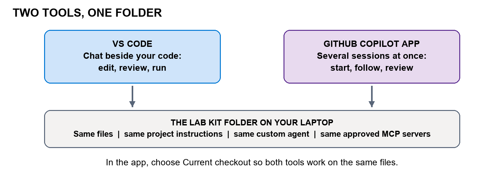
Opens the full-size image in a new tab.Where things are
| You want to | In VS Code | In the GitHub Copilot app |
|---|---|---|
| Open Copilot | Ctrl+Alt+I opens the Chat view | Open GitHub Copilot from the Start menu |
| Start a fresh conversation | New Chat (+) at the top of the Chat view | + beside Sessions, then select the kit folder |
| Let Copilot change files | Session Target: Copilot. Agent: Agent | Mode: Interactive |
| Get a plan first | Type /plan before your request | Mode: Plan |
| Use a custom agent | Agent dropdown | Agent picker in the prompt box, or type /agent |
| See and add MCP servers | Extensions view, Ctrl+Shift+X: search @mcp | Customize > MCP |
| Review what changed | Source Control view, Ctrl+Shift+G | Changes, above the prompt box |
| Run a second task | New Chat (+) | + beside Sessions starts another session |
When you use both at once
In the app, set Workspace to Current checkout. Both tools then read and write the same files. New worktree gives a session its own copy of the files on a separate branch, which VS Code does not show.
Give two sessions different folders, for example app/ in one and services/address-lookup/ in the other. Two sessions that edit the same file overwrite each other.
LAB 1 OF 4 | 11:45-12:30 | 45 MINUTES
Lab 1 Set up and write the form spec
You finish with: VS Code and the GitHub Copilot app working on the same folder, a form chosen, and a checked list of what the form asks.
| Step | What you do | About |
|---|---|---|
| 1 | Set up VS Code | 5 min |
| 2 | Set up the GitHub Copilot app | 5 min |
| 3 | Get the lab kit and open it in both tools | 5 min |
| 4 | Choose your form | 10 min |
| 5 | Write the form spec with Copilot | 10 min |
| 6 | Check the form spec against the PDF | 10 min |
Step 1 Set up VS Code
- Open VS Code. Select the Accounts icon at the bottom left and confirm that you are signed in to GitHub with your OPS account.
- Open the Chat view with Ctrl+Alt+I.
-
In the Session Target control select Copilot. In the Agent dropdown select Agent.
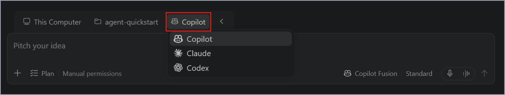
Opens the full-size image in a new tab.The Session Target control in VS Code. Source: VS Code documentation. -
Send this prompt.
COPILOT PROMPT | VS CODE OR THE GITHUB COPILOT APP
Reply with the single word READY.You should see: READY. If Copilot asks you to sign in or says you have no access, tell your table lead now.
Step 2 Set up the GitHub Copilot app
Installed it before today? Open it, check that you are signed in with your OPS account, set the tool permissions (number 5 below) and go to step 3. Not installed? Install it now, and allow 10 minutes. If it cannot be installed on your laptop, do the labs in VS Code. Every step works there.
-
Download the app from github.com/features/ai/github-app (opens in a new tab). The direct link for Windows is gh.io/copilot-app-win64 (opens in a new tab). Setup help: Getting started with the GitHub Copilot app (opens in a new tab).
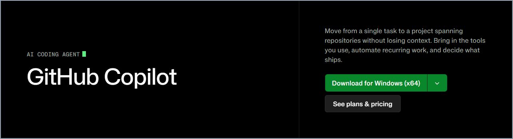
Opens the full-size image in a new tab.The download page for the GitHub Copilot app. - Run the installer, then open GitHub Copilot from the Start menu.
- Select Sign in to GitHub and sign in with your OPS account.
- The app offers to add repositories. Skip that for now. Choose a theme and finish the setup.
- Open the app’s settings, select Sessions and set Tool permissions to Assisted or Ask every time. Assisted asks about fewer requests. With Ask every time you approve every command and file change, which takes many clicks from Lab 2 on. Do not use Approve all today.
Step 3 Get the lab kit and open it in both tools
The lab kit is one small repository of help for the labs. You build your application inside it.
TERMINAL
git clone https://github.com/haslam93/ops-developer-day-lab-kit.gitIN VS CODE
- Select File > Open Folder and open the
ops-developer-day-lab-kitfolder. - Select Yes, I trust the authors.
IN THE GITHUB COPILOT APP
- Select + beside Sessions, then Open local folder, and select the same folder.
- Under the prompt box set Environment to This computer and Workspace to Current checkout.
- Set the mode to Interactive.
- Send the READY prompt from step 1 in the app as well.
- Open
README.md. It lists what is in the kit and gives the GitHub details for today. - Open
.github/copilot-instructions.md. These are the project’s rules. Copilot reads them on every request, in both tools.
Step 4 Choose your form
| Your choice | What to do |
|---|---|
| A sample form from the kit | Open the forms folder and choose one of the three sample forms: marriage-licence-fee-affidavit (30 fields), place-of-business-questionnaire (37 fields) or amend-business-name (332 fields: build two or three sections only). Each folder holds the blank PDF, form.pdf, and a ready outline.md. |
| A form from your ministry | In the Central Forms Repository (opens in a new tab) select Ministries, then your ministry. The list of ministries has two pages. Choose a form that people fill in, not a guide, of one or two pages. Save the English PDF as forms/my-form/form.pdf. |
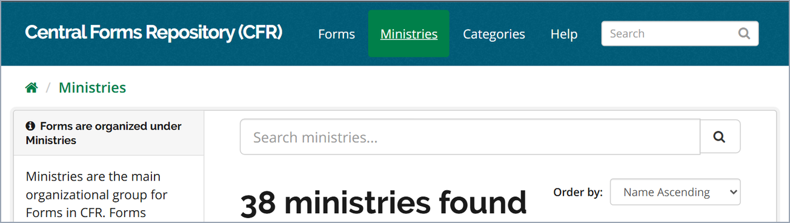
Opens the full-size image in a new tab.- Allow 5 minutes to choose. If nothing fits, or the site does not load, take a sample form.
- Open the PDF in Adobe Acrobat Reader. It does not open in a browser. Click through it once.
-
Ministry form only: ask Copilot to create the outline.
COPILOT PROMPT | VS CODE OR THE GITHUB COPILOT APP
Run tools/extract-form/extract_form_outline.py on forms/my-form/form.pdf. If Python is not installed, stop and tell me. Do not install Python. Install its one dependency first if it is missing. Tell me how many fields it found.
The field count is the real size of the form: the site shows no page count. More than about 50 fields? Plan to build two or three sections only (step 6).
Why Copilot needs an outline
Most forms in the repository are Adobe forms. Copilot, like a browser, sees only a page that says the file needs Adobe Reader. outline.md is the form’s content as plain text: every section, field, label, option and script. No fields found? The PDF is a guide or a print-only form: choose another. No Python? Use a sample form, or attach a screenshot of each page to the chat and send the screenshot prompt in docs/lab-prompts.md.
Step 5 Write the form spec with Copilot
A form spec is a plain list of what the form asks: every question, its type, whether it is required, and its rules, such as “enable this question only when that box is ticked”. You write it before any code, for three reasons.
- Copilot builds from it. A clear spec gives a correct form. Without one, Copilot guesses, and the form looks right but is wrong.
- You can check it. Comparing a short list with the PDF takes minutes. Finding a missing rule in generated code takes far longer.
- Every later step uses it: the build, the tests and the hand-off note.
Three rows of a form spec, from form 026-LE221, Security Screening Check:
| ID | Label, as on the form | Type | Required | Rule or condition | Completed by |
|---|---|---|---|---|---|
| APP-01 | Last name | Text | Yes | None | Applicant |
| APP-09 | Driver’s licence number | Text | No | Enabled only when the driving-history check is ticked | Applicant |
| ORG-01 | Form checked for completeness | Checkbox | No | None | Organization |
- Start a fresh conversation in VS Code or in the app.
-
Send this prompt. Replace
<form>with your form’s folder name, for exampleexample-security-screening-check.COPILOT PROMPT | VS CODE OR THE GITHUB COPILOT APP
Fill in, and the prompt uses it:Read forms/<form>/outline.md. It is the content of an Ontario government PDF form: sections, fields, labels, options and the scripts behind its rules. Create docs/form-spec.md from it. Use docs/form-spec-template.md as the layout. Do not write any application code. List every question a person answers, grouped by section, with: ID, label as on the form, type, required (yes or no), options or format, rule or condition, and who completes it (applicant, organization or office). Then list the rules that show, hide, enable or disable fields, the groups that repeat, the calculations and format checks, and the signatures. Leave out buttons, fonts, page layout and navigation scripts. Finish with anything you could not work out from the outline, including each required answer you chose without evidence in the form. - Copilot works for a few minutes and creates
docs/form-spec.md. Open it.
Step 6 Check the form spec against the PDF
Copilot wrote the spec from the outline. It can be wrong, and the outline does not hold everything. Put the PDF beside the spec and check five things.
| Check | What to look for |
|---|---|
| Scope | A long form? Choose two or three sections for today and ask Copilot to mark the others not today. |
| Questions | Count the questions in one section of the PDF. The spec has the same number, with the same wording. |
| Who answers | Sections for an organization or an office are marked. They stay out of the web form. |
| Required | The PDF often does not say. Every question is required or optional: decide each one, and list the ones you chose without evidence as questions for the form's owner. |
| Rules | Try two rules in Adobe Reader, for example tick a box, and confirm that the spec says what happens. |
-
Tell Copilot exactly what to correct.
COPILOT PROMPT | VS CODE OR THE GITHUB COPILOT APP
In docs/form-spec.md, field <ID> is wrong: <what the PDF shows>. Correct that row and any row the same fact changes. Tell me which rows you changed. - Add your initials at the top of the spec:
Reviewed by <your initials> against the PDF. -
Save your work. Ask Copilot to commit it, or run this in the kit folder.
TERMINAL
git add -A git commit -m "Lab 1: form spec"
LAB 2 OF 4 | 13:15-14:00 | 45 MINUTES
Lab 2 Connect to GitHub issues and build
You finish with: Your user story created as a GitHub issue and pulled into your project through MCP, and a first working version of your form, with tests.
| Step | What you do | About |
|---|---|---|
| 1 | Create your user story as a GitHub issue | 5 min |
| 2 | Connect the GitHub MCP server | 10 min |
| 3 | Pull your user story through MCP | 5 min |
| 4 | Plan the application | 5 min |
| 5 | Build it and try it | 15 min |
| 6 | Fix the gaps | 5 min |
Step 1 Create your user story as a GitHub issue
On an OPS project, work starts as an item on a backlog. Today the backlog is the list of issues in the lab repository, in the event’s GitHub organization. The kit’s README.md gives the repository’s address.
- Open the lab repository in Edge and sign in to GitHub with your OPS account.
- Select Issues, then New issue, and choose the template User story: put a form online. No template? Open a blank issue and paste the description and the acceptance criteria from the kit’s
docs/user-story.md. - Give the issue a title that names your form, for example
Put form 026-LE221 online (JD), with your own initials. - Create the issue. Note the number beside its title, for example
#42. It is the number of your issue.
Cannot open the repository, or cannot create an issue? Tell your table lead and carry on. Step 3 has a fallback.
Step 2 Connect the GitHub MCP server
MCP, the Model Context Protocol, lets Copilot use tools outside the editor: read an issue, query a database, search documentation. At OPS, ITOD keeps a registry of approved MCP servers, and Copilot runs servers from that registry only. Your OPS account already points Copilot at the registry: there is nothing to configure.
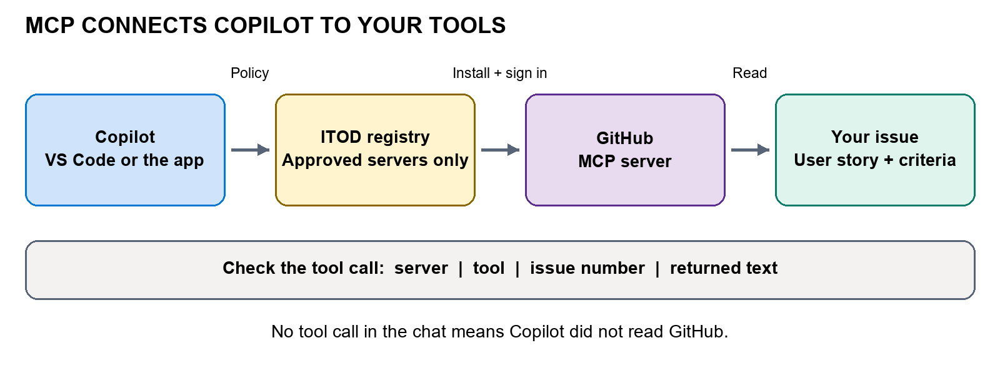
Opens the full-size image in a new tab.IN VS CODE
- Open the Extensions view with Ctrl+Shift+X and type
@mcpin the search box. - The list shows the servers in the OPS registry. If VS Code shows Browse MCP Servers instead, select it. No list at all? Press Ctrl+Shift+P and run MCP: Browse MCP Servers.
- Select the GitHub server, then Install. When VS Code asks, confirm that you trust the server.
IN THE GITHUB COPILOT APP
- Select Customize in the sidebar, then MCP.
- If the GitHub server from the OPS registry is offered, follow the prompts to install it.
- If it is not, do steps 2 and 3 in VS Code. The app then works from the same
docs/story.md.
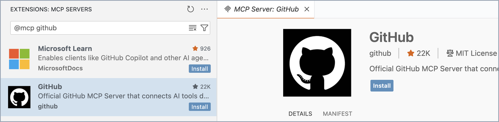
Opens the full-size image in a new tab.@mcp in the VS Code Extensions view. Source: VS Code documentation. Your list shows the OPS registry.- Read the list before you install. It shows the servers OPS has approved. Note one, besides GitHub, that you could use in your own work. A request for a new server goes to ITOD.
- If a sign-in request appears, read it, then allow the server to use your OPS account on GitHub.
- Check that it is there: MCP: List Servers from Ctrl+Shift+P in VS Code, Installed in the app.
Step 3 Pull your user story through MCP
Your user story is now an issue on GitHub. Ask Copilot to read it. Give it the lab repository, written as organization/repository, and the number of your issue.
COPILOT PROMPT | VS CODE OR THE GITHUB COPILOT APP
Use the GitHub MCP server. In repository <organization>/<repository>, get issue <number>.
Read the issue with that server only. If it has no tool that reads an issue, stop and
tell me. Do not use the gh command or the web instead.
Show its title and description exactly as written.
Do not create or change anything on GitHub.
Then save that text as docs/story.md.- Copilot asks before it runs the tool. Read what it wants to run, then approve.
- Expand the tool call in the conversation. Check that it used the GitHub server, that the tool reads an issue (for example
issue_read) and that the number is yours. A terminal command such asgh issue viewis not the MCP server: return to step 2. No tool call, no proof: Copilot then wrote the story from guesswork. Delete the file and ask again, naming the server. - Open
docs/story.mdand compare it with the issue in your browser.
Copilot answers that it has no tool that reads an issue? The server from the registry is not connected in that tool: return to step 2. No access to GitHub issues at all? Copy docs/user-story.md to docs/story.md, put your form’s number in the title and continue.
Step 4 Plan the application
This is the largest change of the day, so ask for a plan before Copilot writes any code. You choose the stack. If you have no preference, the project instructions name a simple one.
IN VS CODE
Start a new chat. Type /plan, a space, then paste the prompt.
IN THE GITHUB COPILOT APP
Start a new session in the kit folder. Set the mode to Plan, then paste the prompt.
COPILOT PROMPT | VS CODE OR THE GITHUB COPILOT APP
Plan a small web application that puts the form in docs/form-spec.md online and
meets docs/story.md. Follow .github/copilot-instructions.md.
Stack: <your stack, or: the simplest option in the project instructions>.
Build only the questions the applicant answers. Leave out sections completed by an
organization or an office, and any section the spec marks "not today".
Show the form's notice of collection as text above the questions, in the form's own
wording.
Include the required and format checks, the rules that show or hide fields,
the repeating groups, and a declaration checkbox with a typed full name in place of
each signature.
The design system does not disable or lock controls. Where the PDF does, show the field
when it applies, or keep it available and say what is needed in a message.
On submit, check every rule again on the server, store the submission in a local
file and show a confirmation page with a reference number.
Plain pages are fine for now. The Ontario Design System comes in the next lab.
Add a test for every rule. Unit and server tests only: browser tests come in Lab 4.
List the files you will create, the commands that start the application and run
the tests, and any decision you need from me.- Answer Copilot’s questions. If you are unsure, ask it to recommend an option and explain why.
- Read the plan. It should build only today’s sections, name the files, check the rules on the server, include tests and say how to start the application.
- Ask for changes until the plan is right. Then approve it.
Step 5 Build it and try it
- Copilot builds the application. It asks before it runs commands, such as installing a package or running the tests. Read each request, then approve. Expect 5 to 10 minutes.
- When it finishes, review what changed: the Source Control view in VS Code, or Changes in the app.
-
Ask Copilot to start the application.
COPILOT PROMPT | VS CODE OR THE GITHUB COPILOT APP
If a copy of the application is already running, stop it first: find it by the port it listens on. Then start the application and give me the address to open in my browser. Tell me how to stop it. -
Open the address in Edge. Fill in the form with made-up data and submit it.
You should see: a confirmation page with a reference number.
-
Score the result against your form spec.
Score Your count Questions present, with the right label and type of Required questions that refuse an empty answer of Rules and repeating groups that work when you try them of Tests passing of 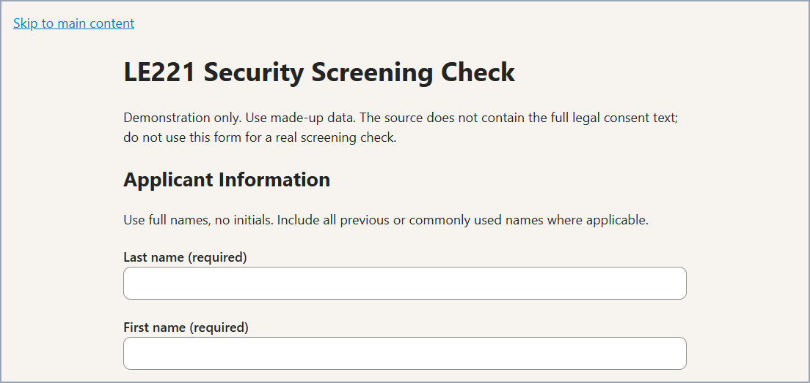
Opens the full-size image in a new tab.Example of a first version, from a test run of this lab. Yours will differ. -
Save the first version before you fix anything. Ask Copilot to commit it, or run this in the kit folder.
TERMINAL
git add -A git commit -m "Lab 2: first version"
Step 6 Fix the gaps
Fix what the first build got wrong, one problem per prompt. Start with required questions and rules. Leave the look of the page for Lab 3.
COPILOT PROMPT | VS CODE OR THE GITHUB COPILOT APP
In the web form, field <ID> is wrong: <what happens now>.
The form spec says: <the rule>.
Fix it. If the form spec is wrong too, correct it. Add a test that fails before the
fix and passes after it. Run the tests.- After each fix, send the start prompt from step 5 again, so that the application restarts. Then reload the page and try the rule yourself.
-
When the tests pass, save your work again.
TERMINAL
git add -A git commit -m "Lab 2: fixes"
Optional: ask Copilot to add a comment with your score to your issue. The prompt is in docs/lab-prompts.md. Copilot asks before it writes to GitHub.
LAB 3 OF 4 | 14:00-14:45 | 45 MINUTES
Lab 3 Ontario Design System and accessibility
You finish with: Your form in the Ontario look and feel, an accessibility check you ran yourself, and the problems fixed.
| Step | What you do | About |
|---|---|---|
| 1 | Find your way around the Ontario Design System | 5 min |
| 2 | Apply it to your form | 15 min |
| 3 | Check accessibility three ways | 15 min |
| 4 | Fix what you found | 10 min |
Step 1 Find your way around the Ontario Design System
The Ontario Design System is the design and coding standard for Government of Ontario websites and applications. It gives you components, styles and guidance, with code for each.
| Where | What you find |
|---|---|
| designsystem.ontario.ca (opens in a new tab) | The home page. |
| Components (opens in a new tab) | Every component, with guidance, a preview and code. Form components are under Forms and inputs. |
| Getting started for developers (opens in a new tab) | How to add it: the distribution package, npm packages or web components. |
| Error messaging (opens in a new tab) | How Ontario services show errors on a form. |
docs/ontario-design-system.md in the kit | The same links, the install options and the components a form needs. Copilot reads this file. |
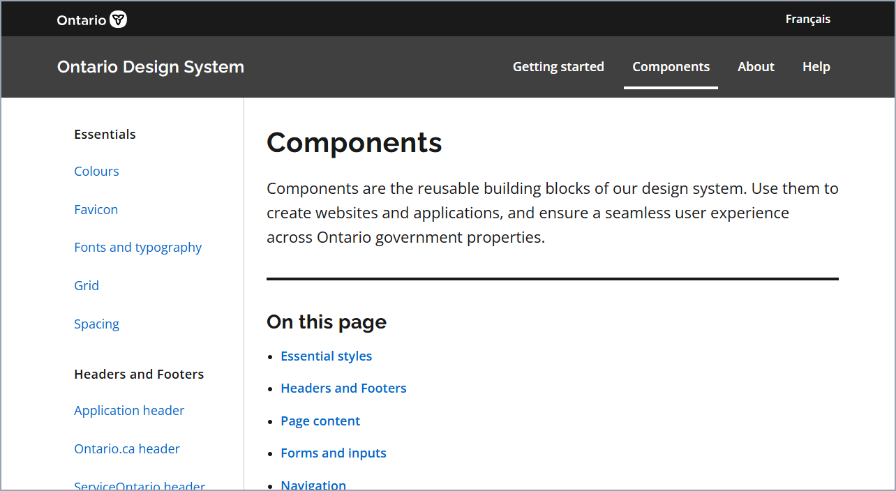
Opens the full-size image in a new tab.- Open the Components page. Under Forms and inputs, open Text inputs and Error messaging. Look at the preview and the code of each.
Step 2 Apply it to your form
-
Start a fresh conversation and send this prompt.
COPILOT PROMPT | VS CODE OR THE GITHUB COPILOT APP
Restyle the web form with the Ontario Design System. Read docs/ontario-design-system.md first. Add the design system as web components, unless this stack needs another option. Use its application header, simple footer, fieldsets, labels, hint text, text inputs, text areas, radio buttons, checkboxes, dropdown lists, buttons and error messaging. The footer sits at the bottom of the window when the page is short, and after the content when it is long. Use each component from its own source: a web component from its readme and properties, an HTML component from the design system's sample. Group the questions under the same section headings as the PDF. Show errors as the design system describes: a summary at the top of the page that links to each field, and a message at each field. Write custom CSS only where no component fits, and tell me where you did. If the design system has no component for something, build it as plain HTML and CSS in the spirit of the design system, including its guidance, and tell me what you built. Do not reach into or change a component: if one does not do what you need, tell me. Keep every question, rule and test working. Run the tests before you finish. - Copilot adds the design system to your project. It may ask to install a package or download a file. Read the request, then approve.
- Send the start prompt from Lab 2 step 5 again, so that the application restarts. Then reload your form. Compare it with the component pages. Narrow the browser window to the width of a phone. Note anything that differs from the component pages, such as a missing icon or arrow. It goes in
docs/a11y-findings.mdin step 3. -
Submit the form with a mistake in it, for example empty.
You should see: a summary at the top headed “There is a problem”, a link from each error to its field, and a message at each field.
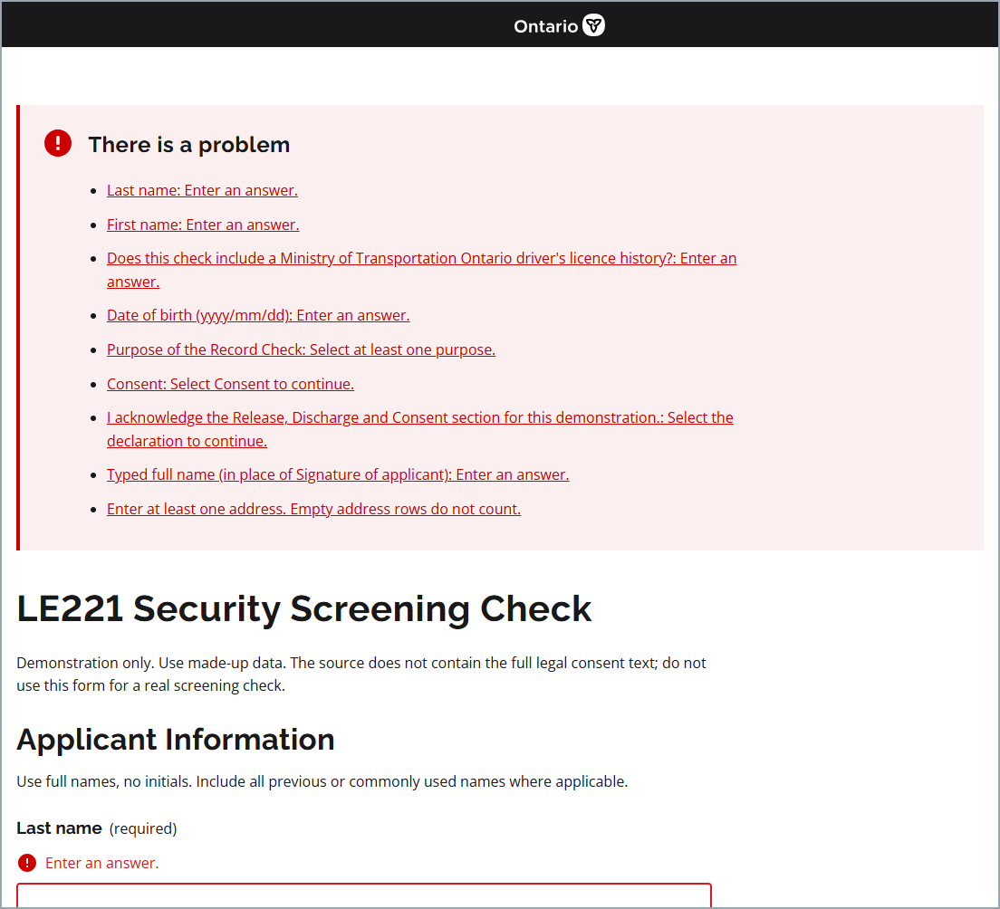
Opens the full-size image in a new tab.Step 3 Check accessibility three ways
Ontario’s accessibility law, the AODA, requires Government of Ontario websites, public and internal, to meet WCAG 2.0 Level AA (opens in a new tab). The design system helps, but only testing shows whether your form works for everyone. The kit’s docs/accessibility-checklist.md lists what a form needs. Copy docs/a11y-findings-template.md to docs/a11y-findings.md and write every problem you find there.
A. Automated audit (5 min)
- With your form open in Edge, press F12. Open the Lighthouse tool, select Accessibility only, then select Analyze page load.
- Write down the score and each failed audit. A score of 100 with nothing failed is common: an automated audit checks only part of the standard. Carry on with B and C.
B. Keyboard only, no mouse (5 min)
| Try this | Passes when |
|---|---|
| Press Tab through the whole form | You reach every field and button in a sensible order, and you can always see where you are. |
| Radio buttons, checkboxes, dropdown lists | The arrow keys move between radio buttons and through a dropdown list. Space ticks a checkbox. |
| Submit the form with a mistake in it | The keyboard focus moves to the error summary, and each link in it takes you to its field. |
| Zoom the browser to 200% | Nothing is cut off and you do not have to scroll sideways. |
C. Reviewer agent (5 min)
The kit includes a custom agent, Accessibility Reviewer. It can read and search. It cannot edit files or run commands.
IN VS CODE
In the Agent dropdown select Accessibility Reviewer.
IN THE GITHUB COPILOT APP
Select Accessibility Reviewer in the agent picker in the prompt box, or type /agent.
COPILOT PROMPT | VS CODE OR THE GITHUB COPILOT APP
Review the web form's pages for accessibility problems against WCAG 2.0 Level AA
and docs/accessibility-checklist.md. For each finding give the file and line, who
is affected and the fix. Do not edit files.- Check two findings in the browser before you accept them. A reviewer can be wrong: when a finding is about the design system, check it against the component page too. Add the ones you agree with to
docs/a11y-findings.md. A finding that needs a new page, such as a review step before submitting, does not fit today: record it as not fixed. - Switch back to the default agent.
Step 4 Fix what you found
COPILOT PROMPT | VS CODE OR THE GITHUB COPILOT APP
Fix the findings listed in docs/a11y-findings.md.
Change only what each finding needs. Keep every rule and test working.
Then mark each finding in that file as fixed or not fixed, with the reason.- Send the start prompt from Lab 2 step 5 again. Run the Lighthouse audit again and repeat the keyboard checks that failed. Add the new score to
docs/a11y-findings.md. -
Save your work. Ask Copilot to commit it, or run this in the kit folder.
TERMINAL
git add -A git commit -m "Lab 3: design system and accessibility"
An automated audit finds only some accessibility problems. Passing these checks does not certify AODA or WCAG conformance.
LAB 4 OF 4 | 15:00-15:45 | 45 MINUTES
Lab 4 Shared service and testing
You finish with: An address lookup service you built, your form connected to it, Playwright tests and a one-page hand-off note.
| Step | What you do | About |
|---|---|---|
| 1 | Build the address lookup service | 10 min |
| 2 | Connect your form to it | 10 min |
| 3 | Test the form with Playwright | 15 min |
| 4 | Add an accessibility check to the tests | 5 min |
| 5 | Write the hand-off note | 5 min |
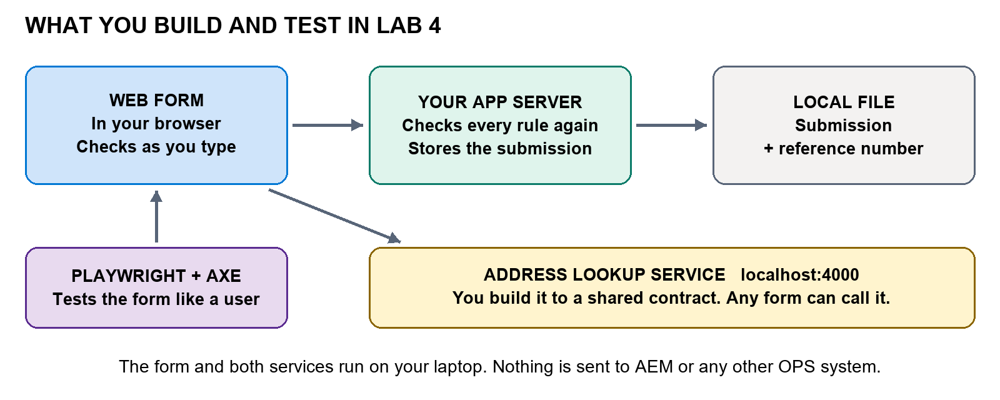
Opens the full-size image in a new tab.Step 1 Build the address lookup service
Addresses appear on most forms. If every form checks postal codes its own way, there are hundreds of versions to maintain. A shared service is written once, and every form calls it. You build one now. The kit’s docs/address-lookup-contract.md is its contract: the request, the responses and the sample data. Everyone builds to the same contract, so your form also works with a neighbour’s service.
Try both tools at once
Start this step in the GitHub Copilot app. While it builds the service in services/address-lookup, read step 3 in VS Code and decide what you want tested. Two sessions can work at the same time when they work in different folders.
- Read the contract. It is one page.
-
Send this prompt. Approve the commands Copilot asks to run.
COPILOT PROMPT | VS CODE OR THE GITHUB COPILOT APP
Build the shared address lookup service described in docs/address-lookup-contract.md, in services/address-lookup. Follow the contract exactly. Keep the service separate from the web application: its own start command and its own tests. Add a test for each response in the contract. Run the tests. Tell me how to start the service, and give me three addresses to try in my browser: one found, one not found and the one that simulates an outage. -
Ask Copilot to start the service and leave it running. Then open the three addresses it gave you in Edge.
You should see: a city and a province for the first,
not_foundfor the second andunavailablefor the third.
Step 2 Connect your form to it
No address question on your form? Go to step 3. The service you built is ready for any form that has one.
COPILOT PROMPT | VS CODE OR THE GITHUB COPILOT APP
Connect the address questions in the web form to the address lookup service at
http://localhost:4000, as docs/address-lookup-contract.md describes.
When the user enters a postal code, fill in the city and province. The user can
still change them.
If the service finds nothing, is down or is slow, say so in plain words and let
the user type the address.
Keep the format checks from the form spec. If the address block repeats, the
lookup works in every copy.
Add tests for found, not found and unavailable. Run the tests.- Send the start prompt from Lab 2 step 5 again, so that the application restarts with the lookup. If the service from step 1 has stopped, ask Copilot to start it again.
-
In your form, try three postal codes:
K1A 0B1, which is in the sample data;A1A 1A1, which is not; andX0X 0X0, which makes the service fail.You should see: the city and province filled in for the first. A clear message, and fields you can still type in, for the other two.
Step 3 Test the form with Playwright
Playwright (opens in a new tab) drives a real browser the way a person does: it opens the form, types, clicks and checks what the page shows. You get the checks a tester would do by hand, and they run again after every change. The kit’s docs/testing-with-playwright.md has the details.
COPILOT PROMPT | VS CODE OR THE GITHUB COPILOT APP
Add end-to-end tests with Playwright in app/e2e.
Read docs/testing-with-playwright.md first.
Use the Microsoft Edge that is installed on this computer (channel "msedge").
Do not download other browsers.
Write these tests, with made-up data:
1. Complete the form with valid answers and submit: a reference number is shown.
2. Submit with a required question empty: the error summary appears and links to
the field.
3. Each rule in docs/form-spec.md that shows or hides a field, and each rule the web form
turns into a message.
4. Add and remove a repeating group, if the form has one.
5. Complete and submit the form using the keyboard only.
6. Address lookup: found, not found and unavailable, if the form has an address.
7. Footer: on a short page it sits at the bottom of the window, and on a long page it is
below the last content and covers nothing.
Leave out a test that does not apply to this form, and tell me which you left out.
Find elements by their label or role, as a user would.
Run the tests. If a test finds a real fault, fix the application. If the test is
wrong, fix the test. Tell me which was which.- Copilot installs Playwright and writes the tests. Approve the install. The tests use the Edge that is already on your laptop.
- When a test fails, Copilot says whether the application or the test was wrong. Read its reasoning. Do not accept a test that was weakened to make it pass.
- Watch the tests drive the browser. Ask Copilot to run them in headed mode, or run
npx playwright test --headedin the application folder. - Open the report with
npx playwright show-report.
Step 4 Add an accessibility check to the tests
axe (opens in a new tab) is an accessibility scanner that runs inside a Playwright test. It repeats the automated part of Lab 3 on every test run, so a later change cannot quietly break it.
COPILOT PROMPT | VS CODE OR THE GITHUB COPILOT APP
Add an accessibility check to the Playwright tests with @axe-core/playwright, for
WCAG 2.0 Level A and AA. Check the empty form, the form showing errors and the
confirmation page.
Run the tests and list each violation with the element it is on. Then fix the
violations and run the tests again.- Compare what axe found with your Lighthouse result from Lab 3.
More time? Ask Copilot to open the form in a browser and try to break it. The prompt is in docs/lab-prompts.md. Copilot uses the Playwright from step 3, or browser tools if your tool has them.
Step 5 Write the hand-off note
COPILOT PROMPT | VS CODE OR THE GITHUB COPILOT APP
Write docs/handoff.md, one page, using only what is in this repository.
No estimates and no praise.
1. What the web form does now.
2. What was converted from the PDF: number of questions, rules and repeating groups.
3. What was left out and why.
4. Test and accessibility results, from the last test run and docs/a11y-findings.md.
Write "not run" for anything that is missing.
5. What is still needed before real use: sign-in, the real back end, privacy and
security review, French, records retention, testing with users.
6. Shared services this form could use.- Read the note and correct it. It is the page to take to your manager if you want to keep going with this form.
-
Save your work. Ask Copilot to commit it, or run this in the kit folder.
TERMINAL
git add -A git commit -m "Lab 4: address service, tests and hand-off"
Optional, and only if your table lead says the lab repository accepts pushes: push your work to a branch named after you and open a draft pull request that mentions your issue. The prompt is in docs/lab-prompts.md. Push nowhere else.
For the showcase: choose one thing to show in 60 seconds. The PDF beside your web form, one thing Copilot got wrong and how you caught it, or a Playwright test driving your form.
15:45-16:00 | 15 MINUTES
Showcase and after today
Volunteers show their form for 60 seconds each: what they built, one thing Copilot got wrong and how they caught it, and what they would do next.
What you take away
- Your folder: the web form, the address service, the tests and a commit from each lab.
docs/form-spec.mdanddocs/handoff.md: what was converted, and what real use would still need.- The kit’s project instructions, reviewer agent and accessibility checklist. Copy them into your own repository and adapt them.
After today
- Try the same steps on a form or a feature from your own backlog: write the spec, plan, build, check, test.
- Do not deploy today’s work or use it with real data. Taking a form further needs your manager’s support and the usual OPS approvals.
OPTIONAL | FOR EXPERIENCED COPILOT USERS | WHEN YOU ARE AHEAD
Advanced track From one form to many
You converted one form by hand. The Central Forms Repository lists about 2,500. If you use Copilot every day and finish a lab early, work on this question: how would a team convert the next fifty forms to the same standard, without starting each one from nothing?
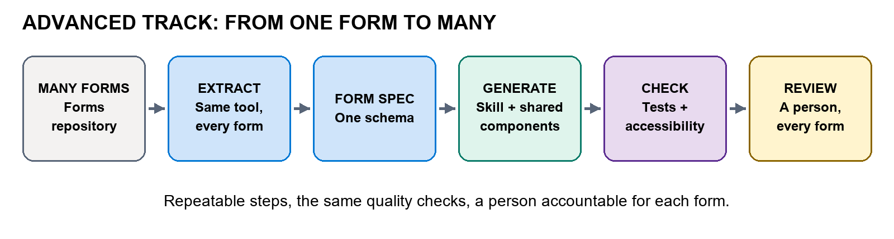
Opens the full-size image in a new tab.Before you start: finish the lab you are in. Table leads, your table comes first. You will not finish all five steps today. Pick the ones that fit your time and keep the rest for after the event.
| Step | Start after | Time | Do | Done when |
|---|---|---|---|---|
| A1 | Lab 1 | 15 min | Make the form spec machine-readable. Define docs/form-spec.schema.json: sections, questions, types, options, rules, repeating groups and who completes each question. Convert your spec to docs/form-spec.json and validate it. | A neighbour’s spec also fits your schema. |
| A2 | Lab 3 | 20 min | Capture your process as an agent skill, so that the next form starts from what you learned. Use the prompt below. | The skill appears when you type / in the chat, in both tools. |
| A3 | Lab 4 | 20 min | Make common inputs generic. Move the address block, person name, contact details and dates into shared components that any form can use, each with its own tests. | Your form uses the shared components and every test passes. |
| A4 | A2 | 20 min | Run the skill on a second form. In the GitHub Copilot app, start a session with Workspace set to New worktree, so that your first form stays untouched. Count what is right without a fix by hand. | A second form runs, with a score to set beside your Lab 2 score. |
| A5 | Any time | Discuss | List what must be true before a team relies on this: who reviews each spec, which checks run on every form, what happens when the PDF changes, who owns each shared service, where submissions go, privacy and security review. | A short list in docs/scaling-notes.md. |
Prompt for step A2: review what Copilot writes before you rely on it.
COPILOT PROMPT | VS CODE OR THE GITHUB COPILOT APP
Create a project skill named form-to-app in .github/skills/form-to-app.
It converts one Ontario government PDF form into a web form in this repository, in
the order used today: write the form spec and stop for my review, plan, build,
apply the Ontario Design System, check accessibility, then test with Playwright.
It stops and asks me before each stage that changes files.
Include a description of when to use the skill.Keep a person accountable
The aim is repeatable steps and the same quality checks on every form. A person still reviews each spec and each change, and answers for the result.
ASK EARLY | NEVER BYPASS A SECURITY WARNING
If something goes wrong
| What you see | What to do |
|---|---|
| Copilot asks you to sign in, or says you have no access | Check the account you are signed in with. OPS account only. Tell your table lead. |
| The GitHub Copilot app will not install or sign in | Do the labs in VS Code. Every step works there. |
| No Session Target control or no Agent dropdown in VS Code | Your VS Code build differs from this guide. Ask your table lead. |
git clone cannot find the lab kit | Check that you are signed in to GitHub with your OPS account. Ask your table lead for a copy of the kit. |
| The Central Forms Repository does not load, or blocks your request | Use a sample form from the kit, or ask your table lead for another way to get the PDF. |
| The outline tool finds no fields, or fails on your PDF | No fields: the file is a guide or a print-only form, so choose another. Any other failure: use a sample form from the kit, or the screenshot prompt in docs/lab-prompts.md. |
| Node.js or Python is missing, and you cannot install it | No Python: use a sample form from the kit. No Node.js: pair with a neighbour, or ask Copilot to build with the runtime you have and to test with Playwright for that language. |
git commit prints a warning about your name and email, or stops with “Please tell me who you are” | Set them once, as in Before you arrive: git config --global user.name "Your Name", and the same for user.email. Then commit again. |
| You cannot open the lab repository on GitHub, or the GitHub server is not in the list or will not install | Tell your table lead. Only servers in the ITOD registry can run. Copy docs/user-story.md to docs/story.md, put your form’s number in the title and continue. |
| Copilot describes the issue, but the conversation shows no tool call, or only a terminal command | It did not use the GitHub server. Check that the server is installed (Lab 2 step 2), then send the prompt again. |
| A change made in one tool does not appear in the other | In the app, the session’s Workspace must be Current checkout. Start a new session with that setting. |
| Copilot changes files you did not ask about | Review them in Source Control or Changes and discard the ones you do not want. Send the prompt again and name the folders Copilot may change. |
| Copilot repeats the same failing action, or shows no progress for 5 minutes | Stop it and review what it changed. Start a fresh conversation and ask for a smaller piece, such as one section of the form. |
| The address is already in use when the application starts | An earlier copy is still running. Send the start prompt from Lab 2 step 5 again: it stops the earlier copy first. |
| A change does not show after you reload, or the form has lost its styling | An earlier copy of the application is still running, often out of sight. Send the start prompt from Lab 2 step 5 again, then reload. |
| Packages cannot be installed, or Playwright cannot find a browser | Tell your table lead: an install can need administrator rights. Ask Copilot to use the installed Edge. If installs are blocked, test by hand with the list in docs/testing-with-playwright.md. |
| Accessibility Reviewer is not offered as an agent | Check that you opened the kit folder itself, so that .github/agents is at its top level. |
| No Lighthouse tool in DevTools | Select More tools (+) in DevTools and add it. If it is not offered, rely on the keyboard checks and the reviewer agent. |
| A certificate or proxy warning | Stop and tell your table lead. Do not bypass it. |
| A usage limit message | Tell your table lead and pair with a neighbour. |
References
Links checked on 23 November 2026. Menu names can differ in the OPS builds of VS Code and the GitHub Copilot app.